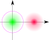

数字通信原理¶
以下所有 \(\Pr(\cdot)\) 中的 \(Z\)（例：\(\Pr(Z > z)\)）默认为标准正态随机变量，即 \(Z \sim \mathcal{N}(0,1)\)。
§3 随机过程¶
平稳与遍历¶
2022年12月3日。
- stationary but not ergodic (for any sense)：\(Y\) 为一随机变量，\(\eval{X}_t \equiv Y\)。
- wide-sense stationary but neither stationary (for any order) nor ergodic (for any sense)：\(\Theta\) 服从 \(\qty{0, \frac12\pi, \pi, \frac32\pi}\) 上的均匀分布，\(\eval{X}_t = \cos(\omega t + \Theta)\)，其中 \(\omega > 0\)。
§4 信道¶
多径传播的影响¶
2022年12月10日。
信号快衰落（fading）。
单一频率信号：
- 时域包络不稳定。
- 频谱弥散。
若信号频带有限宽，有频率选择性衰落。若码元时宽 \(T_B\) 超过各路径延时极差 \(\Delta\tau_m\) 数倍，带宽 \(B\) 小于 \(1/\Delta\tau_m\) 数倍分之一 ，可缓解。
§5 模拟调制系统¶
调幅¶
2022年12月4日–5日。
记基带信号最高频率为 \(f_H\)。
| 带宽ordinary frequency | 相干解调信号功率增益 | 包络检波信噪比增益 | |
|---|---|---|---|
| Amplitude Modulation | \(2 f_H\) | \(\frac12 \times \frac{P_\text{signal}}{P_\text{carrier} + P_\text{signal}}\) | 好时同相干解调，坏时崩溃 |
| Double Side Band | \(2 f_H\) | \(\frac12\) | ✗ 不适用 |
| Single Side Band | \(f_H\) | \(\frac12 \times \frac12 = \frac14\) | ✗ 不适用 |
| Vestigial Side Band | DSB、SSB 之间 | 类似 SSB | ✗ 不适用 |
- “增益”指接收方解调器两端的增益，不是从发射到接收的增益。
- 相干解调时，噪声功率都一样：输入中 \(n_0 B\)，输出中 \(\frac14 n_0 B\)（\(\frac14\) 的来源同 SSB 信号功率）；不过 \(B\) 每种方式不一定一样。比较输出信噪比时，应当控制 \(f_H\)、\(n_0\) 相同。
- 相干解调时，SSB 信号功率增益：第一个 \(\frac12\) 因为同相分量的功率只占一半，第二个因为 \(\cos^2(\omega_\text{carrier} t)\) 的平均下来只有一半。
- AM 包络检波的 \(\frac{P_\text{signal}}{P_\text{carrier} + P_\text{signal}}\) 应当理解为 \(\overline{m^2} / \qty(A^2 + \overline{m^2})\)。因为相对载波而言，\(A\) 恒定，信号也算恒定；而长期时间平均时，\(A\) 仍恒定，但信号不再能算恒定，平均功率只有峰值功率的一半。
调频和调相¶
2022年12月5日，2022年12月15日。
- 调相灵敏度 \(K_\text{phase} \coloneqq \Delta \varphi / m\)。（\(m\) 是调制信号的瞬时值，下同）
- 调频灵敏度 \(K_\text{frequency} \coloneqq \dv{\Delta\varphi}{t} / m\)。
- 最大角频偏 \((\Delta\omega)_\text{max}\)。
如果是调频，并且输入信号是单频正弦波，则 \((\Delta \omega)_\text{max} = K_\text{frequency} m_\text{max}\)。
\((\Delta \omega)_\text{max} \ll \frac\pi6\) 则认为是窄带调频。
若基带信号最高频率为 \(\omega_H\)，则调制后带宽为 \(2 \qty(\omega_H + (\Delta\omega)_\text{max})\)。
- 调频指数 \(m_\text{frequency} \coloneqq (\Delta \omega)_\text{max} / \omega_\text{modulate}\)。
调频、调相后信号总功率等于载波功率——只是重新分配功率，并不添加功率。
“调制信号”相对载波而言，在通信系统中通常是基带信号。（莫与“已调信号”混淆）
与线性调制相比，这两种非线性调制不止搬移基带信号的频谱，还有弥散。
比较¶
2022年12月5日。
| AM | DSB | SSB | VSB | FM | |
|---|---|---|---|---|---|
| \(B/f_H\) | \(2\) | \(2\) | \(1\) | \(1+\varepsilon\) | \(2(1+m_f)\) |
| 抗噪声性能 | + | ++ | ++ | ++ | ++++ |
| 功率利用率 | + | ++ | ++ | ++ | ++++ |
| 设备简单度 | ++++ | +++ | + | ++ | +++ |
§6 数字基带传输系统¶
作为模拟信号的基带信号¶
2022年12月5日。
以二元码为例。记码元重复周期、频率为 \(T_B, f_B\)（B for baud, named after Émile Baudot）。记两种码元的波形分别为 \(g_+, g_-\)，出现概率分别为 \(p_+,p_-\)（\(p_+ + p_- = 1\)）。认为不同时刻发送的码元相互独立。
-
稳态部分 \(\mathop{\mathbb E} g = p_+g_+ + p_-g_-\)
这是确定信号，有周期，频谱离散，导致直流分量、定时分量。无定时分量并不代表无法定时——变换波形后可能存在定时分量。
\(\sum \eval{\delta}_{t - \Z T_B} \leftrightarrow f_B \sum \eval{\delta}_{f - \Z f_B}\)，故稳态部分的功率谱（不是频谱）如下。
\[ \sum \qty(f_B \mathop{\mathbb{E}} G)^2 \eval{\delta}_{f-\Z f_B}. \]可以看到，等概率双极性信号无此部分。对于单极性信号，还要看 \(\mathop{\mathbb E} G\) 的零点会不会与 \(\Z f_B\) 碰撞——不归零的方波谱就全都碰撞了。
-
交变部分 \(g - \mathop{\mathbb E}G\)
这是随机信号，有连续功率谱，影响信号带宽。
在每一码元，以 \(p_\pm\) 的概率出现 \(\pm p_\mp \qty(g_+ - g_-)\)。期望当然为零，方差为 \(p_+ p_- \qty(g_+ - g_-)^2\)。由此大约能得到自相关函数，反正最终功率谱如下。
\[ f_B \times p_+ p_- \qty(G_+ - G_-)^2. \]可以看到，对于方波，带宽与占空比成反比。
基带信号的编码¶
2022年12月5日，2022年12月15日。
基带信号是与模拟信号紧密相关的数字信号。
编码目标：频谱、定时、纠错。
-
Alternative Mark Inversion
如其名。
为保证定时分量，需避免连续零，改进为 High Density Bipolar。
连续0 →
00…0V/B0…0V。（保证编码后连零数量不超过 order，order 实用时常取 3）- V (Violation) 同时满足两个条件：
- （V之间）交替 ±1 ——保证平均仍是零。
- 极性与前一号相同（“前一号”包括原有1和新加的V、B）——方便译码。
- V 的两个条件可能矛盾，于是要引入 B (Balance)。
- V (Violation) 同时满足两个条件：
-
块编码
- 1 binary → 2 binary
- Manchester 双相码：用上升沿、下降沿区分。
- Coded Mark Inversion：用有沿、无沿区分。
- x binary → y binary
- x binary → y (pseudo) ternary
- AMI, HDB.
- 1 binary → 2 binary
-
相对码（aka. 差分码）
这是一种设计，可以和其它编码结合。
码间串扰¶
2022年12月5日，2022年12月15日。
码间串扰（InterSymbol Inference）完全不存在的充要条件如下。
- 时域：\(h\) 在其它抽样时刻（\(\Z T_B - \qty{0}\)）均为零。
- 频域：\(H\) 以 \(f_B\) 为周期延拓后，对所有 \(\omega\) 一致。
由频域条件，\(2B \geq f_B\)，故频带利用率 \(\eta \coloneqq \frac{f_B}{B} \leq 2\)（这是无码间串扰的必要不充分条件），或者对于 \(M\) 元码，\(\eta_b \leq 2 \log M\)。
\(B\) 只算正频率。这里是基带系统，两侧对称分布于 \(\omega = 0\) 附近，\(2B\) 才是频域等效宽度。
这最小的 \(B\) 称作 Nyquist 带宽 \(f_N\)。（仅限基带系统）
有人说，Nyquist ISI criterion 只是 Nyquist–Shannon sampling theorem 的另一角度。
噪声¶
2022年12月5日。
对于二元信号和 Additive Gaussian White Noise（AGWN），最佳门限电平
- 噪声越强，先验概率影响越大。
- 谁先验概率大，谁的判定区域大。
信源均匀分布时，\(V_d^* = 0\)，两个条件误码率一致，总误码率也一致，为 \(\Pr(\sigma_n Z > \frac{A_+ - A_-}{2})\)。
眼图¶
2022年12月5日。
- 最佳抽样时刻、最佳判决门限。
- 抽样失真。
- 噪声容限。
- 定时误差灵敏度。
时域均衡¶
2022年12月5日。
目的：抑制码间串扰。
- 按幅度失真（aka. 峰值失真），要迫零调整。（要求初始失真够小）
- 按平方失真，应用自适应均衡器，让每一处抽样的误差与抽样值不相关。
评价传输特性¶
2022年12月15日。
- 码间串扰。
- 带宽利用率。
- 时域拖尾情况。
§7 数字带通调制系统¶
二进制数字调制¶
2022年12月9日。
以下判决门限 \(V_d^*\)、误码率 \(P_\text{error}\) 都是在信源均匀分布条件下估计的。
Amplitude Shift Keying¶
特例：On / Off Keying。
调制：
- 模拟相乘。
- 数字键控。（用开关电路）
功率谱：将基带信号平移到载频附近，带宽变为原来两倍。
解调：
-
相干解调。
误码率 \(P_e = \Pr(\sigma_n Z > \frac{a}{2})\)，其中 \({\sigma_n}^2\) 为噪声功率，\(a\) 为信号幅度（\(\frac12 a^2\) 为信号功率）。信噪比 \(r = \frac12 a^2 / {\sigma_n}^2\)，因此
\[ \boxed{P_e = \Pr(Z > \sqrt{\frac{r}{2}})} = \frac12 \erfc\sqrt{\frac{r}{4}}. \]
-
包络检波。
大信噪比下，最佳门限同相干解调。发送零时，结果服从 Rayleigh 分布，误码率为
\[ \exp(- \frac{(a/2)^2}{2 {\sigma_n}^2}) = e^{-r/4}. \]发送一时，在大信噪比下，结果服从正态分布，误码率同相干解调。

按旋转向量法可绘出上图。
- 结果是信号叠加噪声。
- 信号发送零时（绿色）为 \((0,0)\)，发送一时（红色）为 \((a,0)\)。
- 噪声服从二维正态分布，均值为零，标准差为 \(\sigma_n\)，协方差为零。
- 判决边界是紫色圆环。
可以看到，发送零时更容易越过判决边界。
总误码率是二者平均。由于第一项是第二项的高阶无穷小，大信噪比下，
\[ \boxed{P_e = \frac12 e^{-r/4}.} \] - 结果是信号叠加噪声。
Frequency Shift Keying¶
相当于两路 ASK 叠加。
调制：键控。
功率谱：将基带信号平移到两个载频附近，传输时带宽相当于同等 ASK 带宽加上两载频距离。（解调时因为有带通滤波，噪声谱的范围还和同等 ASK 一样。）
解调：
- 用两路带通滤波器分解为 ASK，然后各自用 ASK 的方法解调，最后比较。
注意有两路结果，只需比较大小，无需专门设置判决门限。另外差的方差等于方差的和，因此“两路结果之差”的噪声方差是原本的两倍（\(2 {\sigma_n}^2\)）；同时两种码元的幅度差从 \(a-0\) 变成了 \(a - (-a)\)，变为原来的两倍。综合两点，误码率同 ASK，只需把 \(r\) 替换为 \(\frac12 r\)。
- 过零检测：将零点转换为脉冲（限幅、微分、整流），展宽脉冲，低通滤波。
Phase Shift Keying¶
改进：Differential PSK（输入决定输出变不变）。
调制：
- 变换码型为双极性，模拟相乘。
- 制备反相信号，数字键控。
功率谱：先将基带信号转换为双极性信号，再像 ASK 一样搬移，带宽也是最初两倍，不过信源均匀分布时无离散谱。
解调：
- 相干解调（aka. 极性比较法）。若是 DPSK，解调后再变换码型。
同 ASK，只需把 \(a/2\) 换成 \(a\)，即 \(r\) 换成 \(4r\)。若是 DPSK，变换码型时，相邻两位任意一个错误都会导致结果错误，误码率小时相当于翻倍。
- 对于 DPSK，还可比较相位。
将接收信号延时一个码元后与自身相乘，低通滤波，抽样判决。（无需另外变换码型）
这相当于自相干，因此又称“差分相干解调”。不过一般“相干解调”是信号与载波相干，与此不同。
类似 ASK 的包络检波，只需把 \(a/2\) 换成 \(a\)，即 \(r\) 换成 \(4r\)。
横向比较¶
| 相干解调 | 非相干解调（包络检波等） | 与 ASK 比较 | |
|---|---|---|---|
| ASK | \(\Pr(\sigma_n Z > \frac{a}{2}) = \Pr(Z > \sqrt{r/2})\) | \(\frac12 \exp(-r/4)\) | ✗不适用 |
| FSK | \(\Pr(\sqrt2 \sigma_n Z > a) = \Pr(Z > \sqrt{r})\) | \(\frac12 \exp(-r/2)\) | 同下，加上两路比较时 \({\sigma_n}^2\) 翻倍 |
| PSK | \(\Pr(\sigma_n Z > a) = \Pr(Z > \sqrt{2r})\) | ✗不适用 | 两种码元距离从 \(a\) 变成 \(2a\) |
| DPSK | 以上两倍 | \(\frac12 \exp(-r)\) | 同上，相干解调再加码型变换 |
其中 DPSK 的相干解调、全部非相干解调仅限 \(r \gg 1\)。
| ASK | FSK | PSK / DPSK | |
|---|---|---|---|
| 抗噪声性能 | + | ++ | +++ |
| 频带利用率 | ++ | + | ++ |
| 适应性 | + | ++++ | +++ |
| 功率利用率 | + | ++ | ++ |
设备简单度：非相干解调优于相干解调。
多进制数字调制¶
2022年12月9日。
与二进制相比，提高有效性（\(R_b\)），牺牲可靠性（抗噪声性能）。
为比较不同体制，用 \(r_b \coloneqq \frac12 a^2 / ({\sigma_n}^2 \log M)\) 衡量 \(M\) 进制的信噪比。
\[ \frac{E_b R_B}{n_0 B} = \frac{a^2/2}{{\sigma_n}^2 \log M}. \]对于 ASK、PSK，\(B = R_B\)。
Quadrature Shift Keying¶
2022年12月9日。
Also known as 4 – phase shift keying.
改进：Offset QPSK，π/4 相移 QPSK，Q Differential PSK（A、B方式）。
调制：（都先串行转并行）
- 正交调相，模拟相乘。
- 选择相位。
解调：
- 相干解调（aka. 极性比较法）。
分两路，分别乘同相、正交载波，后同 2PSK。若是 DPSK，还需变换码型。
- 对于 DPSK，还可比较相位。
也需要两路。
§9 最佳接收¶
相关形式¶
2022年12月9日，2022年12月15日。
概念¶
目标：最小误码率。
方法：哪个信号的后验概率大就判为哪个。后验概率 = 先验概率 × 似然函数。
对于 AGWN，似然函数（发送 \(s\) 的条件下收到 \(r\) 的概率密度）如下
- 这时 \(k\) 维概率密度。
- 指数部分分母的量纲是
[归一化功率]/[频率]，分子的是[幅度平方]×[时间]。- \({\sigma_n}^2 = n_0 B\)，其中 \(n_0\) 是噪声的单边功率谱密度。
- 指数部分分子在 \(k \to +\infty\) 时才是积分。积分范围是一个码元重复周期。
结构¶
此时
其中 \((\cdots)\) 与发送码元无关，比较概率时无需考虑。
此处 \(\propto\) 都保证系数是正数。
注意积分中 \(\int r^2 \dd{t}\) 与发送码元无关。对于 FSK、PSK，\(\int s^2 \dd{t}\) 也无关，可进一步简化为
这就是最佳接收机的结构。
误码率¶
判决依据各个码元的 \(\ln P\)，误码等价于 \(\ln P < \ln P'\)（发送 \(s\)，误判为 \(s'\)）。
噪声 \(n = r-s\) 的分布更简洁，我们向它看齐。
每一项的量纲都是
[幅度平方]×[时间]。\(n\) 越与 \(\Delta s = s' - s\) 符合，\(r = s + n\) 越容易被误判为 \(s'\)。
任意时刻 \(n \sim \mathcal{N}(0, \frac12 n_0)\)。\(\int n \Delta s \dd{t}\) 是其线性组合，应当服从
记 \(\Delta E = \int \qty(\Delta s)^2 \dd{t}\)，则
信源均匀分布时 \(\Delta \ln P_\text{prior} = 0\)，上式简化为
\(\Delta E = E + E' - 2 (s, s')\)。若 \(E = E' = E_b\)，\((s,s') = \rho E_b\)，则 \(\Delta E = 2(1-\rho) E_b\)。
下面分析特例。设发一时的能量为 \(E_b\)。
| 基带系统体制 | \(\Delta E\) |
|---|---|
| 单极性 | \(E_b\) |
| 双极性 | \(4 E_b\) |
| 带通系统体制 | \(\Delta E\) |
|---|---|
| 2ASK | \(E_b\) |
| 2FSK | \(2 E_b\) |
| 2PSK | \(4 E_b\) |
2ASK、2PSK 显然；2FSK 可展开完全平方差，利用正交性。
将这些结果中的 \(E_b / n_0\) 换为 \(r\)，就变成了实际接收机的公式。
匹配滤波形式¶
2022年12月10日。
目标：最大信噪比。
接收到 \(s + n\)（\(n\) 是 AGWN），传输函数为 \(h\)，则输出中
- 信号频谱密度：\(HS\)。（量纲：
[幅度]/[频率]） - 噪声功率谱密度：\(\frac{n_0}{2} \abs{H}^2\)。（量纲：
[幅度平方]/[频率]）
瞬时信噪比
\((x,y) = \int x^* y \dd{f}\) 是内积。
\(E\) 是码元能量。
取等时， \(H\) 可取 \(S^* e^{-j\omega t_0}\)，即 \(h = \eval{s}_{t_0 - t}\)。
匹配滤波在 \(t_0\) 时刻的输出，与前述相关在 \(T_B\) 时刻的输出相同。（要求信源均匀分布）
多电平基带系统¶
2022年12月10日。
设输出端 \(M\) 种电平分别为 \(\pm d, \pm 3d, \ldots, \pm(M-1)d\)。记输出噪声功率为 \({\sigma_n}^2\)。
误码有两种可能，在两端为 \(\Pr(Z\sigma_n > d)\)，在内部为 \(\Pr(\abs{Z\sigma_n} > d)\)。设信源均匀分布，则总误码率
信源均匀分布时，输出码元平均能量
\(1^2 + 3^2 + \cdots + (2n-1)^2 = \frac13 n (2n-1)(2n+1)\)。
最佳接收时，\(\frac12 n_0 = {\sigma_n}^2 / (H,H)\)，输入码元平均能量 \(E = E_\text{output} / (H,H)\)，可转换为输入信噪比：
以上要求 \(H\) 能无码间串扰。
§10 信源编码¶
带通信号抽样定理¶
2022年12月10日。
给定 \(f_H, B\)，若 \(f_H = n B'\)，\(n \in \N_+\)，\(B' \geq B\)，则按 \(f_s = 2B'\) 抽样也不会失真，与带宽为 \(B'\) 的低通信号一样。
13段折线量化编码¶
2022年12月10日，2022年12月16日。
这是一种脉冲编码调制（Pulse Coded Modulation，PCM），近似不均匀编码的A律（\(A = 87.6 \gg 1\)，如下），主要用于语音信号。
以 \(\abs{x} \leq A^{-1}\) 段的量化间隔为 1。
- 1位极性码
- 3位段落对数量化码
000为0..16，001为16..32。从下一段开始，每段长度翻倍。最后一段111为1024..2048。
- 4位段内均匀量化码
每一段都取 16 个点。
000、001的量化间隔是 1。从下一段开始，每段量化间隔翻倍，最后一段111为 64。
编码时向下对齐，译码时按期望估计。
噪声¶
2022年12月15日。
若均匀量化为 \(M\) 个电平，则信源在零两侧对称均匀分布时，量噪比 \(S_\text{out} / N_\text{quantize}\) 为 \(M^2\)。
加性噪声在此的信噪比 \(S_\text{out} / N_\text{additive} = 1 / (4P_\text{error})\)。（\(M \in 2^\N\) 时）
§11 信道编码¶
差错控制能力¶
2022年12月10日。
最小码距 \(d\)、译码策略决定了差错控制能力。
- 保证正确检测 \(e\) 位：\(d > e\)。
- 保证正确纠错 \(t\) 位：\(d > 2t\)。
- 保证正确纠错 \(t\) 位，正确检测 \(e\) 位（\(e > t\)）：\(d > t+e\)。
杂项¶
频带利用率¶
2022年12月4日。
这个利用率是 utilization 而非 efficiency，衡量数字通信系统的有效性。
以上按码元（\(\text{Baud}\)）衡量，也可按信息（\(\text{bit}\)）衡量—— \(\eta_b \coloneqq R_b / B\)。
若符号数为 \(M\)，则 \(R_b = R_B \log M\)。
量纲¶
2022年12月4日，2022年12月10日。
其中功率、能量是指归一化功率、归一化能量。
[幅度] |
[功率] = [幅度平方] |
[能量] = [幅度平方]×[时间] |
关系 |
|---|---|---|---|
| \(\sigma_n\) | 噪声功率或方差 \({\sigma_n}^2\) | 噪声功率谱密度 \(n_0\) | \({\sigma_n}^2 = n_0 B\) |
| 信号振幅 \(a\) | 信号功率 \(S\) | 信号能量 \(E\) | \(E = ST_B\)，\(S = \frac12 a^2\) |
| 信号 \(x\) | 自相关函数 \(R\) | 功率谱密度 \(P\) | \(R = \mathbb{E}[\eval{x}_{t_1} \eval{x}_{t_2}] \leftrightarrow P\) |
[时域物理量]×[时间] = [频域物理量]。
角频率与频率度量的频域¶
2022年11月8日，2022年12月13日，2022年12月15日。
-
\(ω = 2π f\)，\(ω\) 与 \(f\) 数值并不相同，但表示相同的复指数信号。就像 \(v = \SI{36}{km/h}\) 与 \(v = \SI{10}{m/s}\) 里的 \(36 ≠ 10\)，却表示相同速度。
-
\(\eval{X}_\omega\) 与 \(\eval{X}_f\) 是不同的数学函数，但表示相同的信号。
\(X\) 是个 \(\R \to \C\) 函数，自变量是频率，因变量是频谱密度。\(\eval{X}_\omega\) 与 \(\eval{X}_f\) 的自变量数值不同（前者用角频率 \(\omega\) 度量，后者用频率 \(f\) 度量），因变量相同。\(\eval{X}_f = \eval{X}_{\omega = 2\pi f}\) 给出了自变量的换算关系，它永远成立。
flowchart LR subgraph 频率 ω -.-|"ω = 2π×f"| f end subgraph 频谱密度 X end ω -->|"X(ω)"| X f -->|"X(f)"| X这里为了更清楚，写成 \(\eval{\tilde{X}}_\omega\) 与 \(\eval{X}_f\)，则 \(\eval{X}_f = \eval{\tilde X}_{2\pi f}\)。（实际因变量是重点，自变量不写都行，没必要区分）
比如逆 Fourier 变换：
\[ \begin{split} \eval{x}_t &= \int\limits_\R {\color{red} \eval{\tilde X}_\omega} e^{j\omega t} \frac{\dd{\omega}}{2\pi} \\ &= \int\limits_\R \eval{\tilde X}_{\color{red} 2\pi f} e^{j (2\pi f) t} \frac{\dd{(2\pi f)}}{2\pi} \qq{($\omega \mapsto f = 2\pi f$)} \\ &= \int\limits_\R \eval{\tilde X}_{2\pi f} e^{2\pi j f t} \dd{f} \\ &= \int\limits_\R {\color{red} \eval{X}_{f}} e^{2\pi j f t} \dd{f}. \qq{($\tilde X \mapsto X$)} \\ \end{split} \]这也会影响卷积：
\[ \begin{split} & \frac{1}{2\pi} \int\limits_\R \eval{\tilde X}_{\omega'} \eval{\tilde Y}_{\omega - \omega'} \dd{\omega'} \\ &= \int\limits_\R \eval{\tilde X}_{2\pi f'} \eval{\tilde Y}_{2\pi (f-f')} \frac{\dd{(2\pi f')}}{2\pi} \\ &= \int\limits_\R \eval{X}_{f'} \eval{Y}_{f-f'} \dd{f'}. \end{split} \] -
Dirac \(δ\) 是 \(\sin\)、\(\exp\) 一样的数学函数，和信号没关系，它的定义只有一种形式—— \(\int_\R \eval{\delta}_x \dd{x} = 1\)。
如果已有 \(\eval{\tilde X}_\omega\)，其中含 \(\eval{\delta}_\omega\)，想写出 \(\eval{X}_f\)，那直接把自变量全换了，变成 \(\eval{\delta}_{2\pi f}\) 就好了。不过人们习惯于写 \(\frac{1}{2\pi} \eval{\delta}_f\) 而非 \(\eval{\delta}_{2\pi f}\)，就像把 \(\cos(2x)\) 整理成 \(1 - 2\sin^2 x\)。
Fourier 参数之间的关系¶
2022年8月31日。
频域可用频率 \(f\) 或角频率 \(\omega\) 度量。
这是频域的两种度量，不涉及 Fourier 变换的对偶性。
例如设 \(x = \sum \eval{\delta}_{t - \Z T_0}\)，则
\(\omega_0 T_0 = 2\pi\)，\(f_0 T_0 = 1\)。
注意 \(\eval{\delta}_{2\pi f} = \frac{1}{2\pi} \eval{\delta}_f\)，因为 Dirac \(\delta\) 的定义里有个积分。
正态分布的累积分布¶
2022年12月4日，2022年12月5日。
\(Z \sim \mathcal{N}(0,1)\)，则
其中
这是 \(x \to + \infty\) 下的无穷小量。诈唬使用 L’Hospital 法则，能得到
可以严谨证明 \(\int_{u\geq x} \exp(-au^2) \dd{u} \sim \exp(-ax^2) / \qty(2ax)\)。
\[ \lim \frac{\int\limits_{x}^{+\infty} e^{-au^2} \dd{u}} {\frac{1}{2ax} e^{-ax^2}} = \lim \frac{- e^{-ax^2}}{\qty(\frac{-2ax}{2ax} - \frac{1}{2ax^2}) e^{-ax^2}} = \lim \frac{1}{1 + \frac{1}{2ax^2}} = 1. \]
带宽¶
2022年12月9日，2022年12月10日，2022年12月13日。
信号的功率谱、频率千姿百态，带宽只是一个数字特征。门函数大约是带宽歧义最少的谱。
- 习惯上只算正频率。因此基带系统中的带宽往往是调制后的一半。
-
等效带宽
\(B_\omega \coloneqq \int_\R X \dd{\omega} / \eval{X}_{\omega=0}\)，\(B_f\) 同理。在中心处数值不变、积分相等的意义下，等效为门函数。
这是良定义，应用于几乎所有谱都合理，而且若类似定义等效时宽，则两域宽度严格成反比。
\[ \begin{split} B_f B_t &\coloneqq \frac{\int_\R X \dd{f}}{\eval{X}_{f=0}} \times \frac{\int_\R x \dd{t}}{\eval{x}_{t=0}} \\ &= \frac{\int_\R X \dd{f}}{\eval{x}_{t=0}} \times \frac{\int_\R x \dd{t}}{\eval{X}_{f=0}} \\ &= 1 \times 1 = 1. \end{split} \]
-
谱零点带宽
在中心处数值不变、两侧首个零点不变的意义下，等效为门函数。
主要用于 \(\sinc\) 式频谱，它的谱零点带宽是等效带宽的两倍。又名主瓣带宽。
给定信号，用滤波器去除噪声。若按等效带宽滤波，信号往往被削掉太多，按谱零点带宽就好一些。
下面是一些案例。
- 无码间串扰限制下，频域最窄时为门函数，时域为 \(\sinc\) 型。按任意带宽计算，\(B = \frac12 R_\text{Baud}\)。
-
基带信号标准时域脉冲为门函数（i.e. 不归零矩形脉冲），频域为 \(\sinc\) 型。按谱零点带宽算，\(B = R_\text{Baud}\)。
不过发送出去之前，往往还用滤波器均衡一下码间串扰。这里若用理想低通滤波器，带宽又是上面的了。
模型与结构¶
2022年12月14–15日。
通信系统¶
flowchart LR
subgraph 发送端
信源 --> 发送设备
end
发送设备 --> 信道 --> 接收设备
噪声源 --> 信道
subgraph 接收端
接收设备 --> 信宿
end按信道中信号形式，分为模拟、数字通信系统。
- 模拟
发送设备是调制器，将基带信号转为已调信号；接收设备是解调器。
- 数字
信源、信宿旁有信源压缩编码，信道旁有信道差错控制编码，二者之间还有密码。
如果是数字调制系统（而非数字基带系统），同样有数字版本的调制、解调（键控，Shift Keying）。
flowchart LR 信源 -.-> 信道编码 --> 数字调制 subgraph 编码信道["编码信道（广义信道）"] 数字调制 --> 调制信道["调制信道<br>（狭义信道）"] --> 数字解调 end 数字解调 --> 信道译码 -.-> 信宿
模拟调制系统¶
调制：
- AM：加上 \(A_0\) 再乘 \(\cos(\omega_c t)\)。
- DSB：似上，去掉 \(A_0\)。
- SSB：似上，滤波。另法移相再相乘。
- VSB：似 DSB，滤波。
解调：
- 相干解调：乘载波，低通滤波。
- 包络检波：电容单向充放电。
数字基带系统¶
接收设备：
flowchart LR
信道 -.-> 接收滤波器 --> 同步提取 --> 抽样判决 -.-> 输出
接收滤波器 --> 抽样判决数字调制系统¶
调制：
- 模拟相乘。
- 数字键控。
解调：
flowchart LR
信道 -.-> 带通滤波 --> 处理["非相干解调：全波整流<br>相干解调：乘载波"] --> 低通滤波 --> 抽样判决 -.-> 输出
定时脉冲 --> 抽样判决QPSK 更具体实现见前面§7。
最佳接收¶
- 相关形式：分多路，相乘，积分（信号→数），偏置，比较。有时可省略一路；信源均匀分布时无需偏置。
- 匹配滤波形式：滤波，等到抽样时刻，比较。
后备箱¶
- 用 \(\sin\) 表示 \(\sinc\) 时，若求 \(0\) 处的函数值，不能只看分子。
- 区分 \(\omega\) 和 \(f\)，例如带宽。
- Baud 率描述码元，信息速率描述信息，多电平信号时二者不一致。
- 区分每信息能量 \(E_b\) 和每码元能量 \(E\)。
- \(\sum \eval{\delta}_{t - \Z T_0} = \omega_0 \sum \eval{\delta}_{\omega - \Z \omega_0} = f_0 \sum \eval{\delta}_{f - \Z f_0}\)，有个系数。
- 平顶抽样也时变：它是理想抽样经线性时不变系统，而理想抽样当然时变。
- 注意信号有几路。
- “最小码距 > 纠正位数 + 检测位数”只在“检测位数 > 纠正位数”时有意义。
- 线性分组码中，全零码总许用。
- 区分卷积和相关。一般写为相关更方便用计算器。
- 基带系统判决后时域均衡，若要衡量失真，应考虑所有输出，而不只是输入对应的那些输出。
- 功率谱密度有个平方，通过线性时不变系统前后倍数也是平方。
- 单边带移相调制有个 \(1/2\)：\(\cos x \cos y = \frac12 \qty(\cos(x+y) + \cos(x-y))\)。
- 模拟调制系统中，区分原始基带信号功率、发射机发送功率、接收机接收功率。前两者可相差一倍。
- 给定传输特性，无码间串扰对码率的限制是一些离散点，而非连续区间。
- 差分相干解调确实有“干涉”，但从无需载波、误码率、比较相位等方面看，应该算非相干解调。